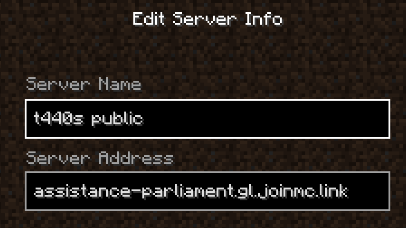
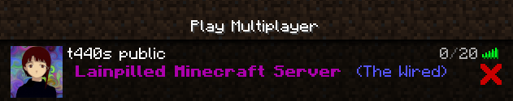

Lainpilled
The link to my modded Minecraft 1.19.2 server is [assistance-parliament.gl.joinmc.link]
Please download these dependencies.
Install forge as client. Download mods from the google drive folder (click download all top right corner). Unzip mods and add the jar files to your mods folder in your .minecraft file. Look up how to add mods to minecraft java if you are confused.


The link to my modded Minecraft 1.19.2 server is [assistance-parliament.gl.joinmc.link]